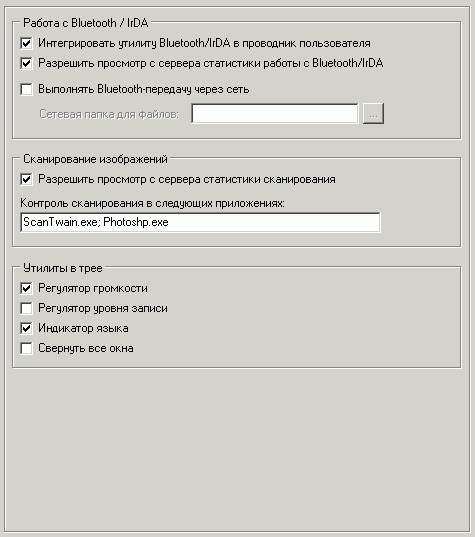

Наиболее важные опции на этой вкладке:
Работа с Bluetooth/IrDA
Подробнее смотрите
здесь
Выполнять Bluetooth-передачу через сеть
Если BT-адаптер расположен только на машине администратора, то имеет смысл организовать передачу файлов через сеть.
В этом случае данные будут записываться через утилиту Bluetooth не физически на телефон, а ввиде файлов в сетевую папку, которую необходимо установить.
Само имя папки с файлами будет содержать имя машины, дату и время.
После успешного копирования администратору будет отправлено сообщение на программу оператора и далее он сможет загрузить файлы самостоятельно, используя утилиту BT.
Утилита сканирования
Для запуска используйте: bodyscan.exe
Также можно указать приложения, из которых сканирование будет отображаться в отчетах (поддерживаются только 32-битные приложения!).